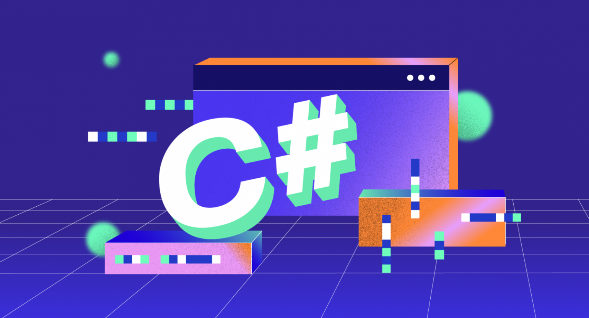

Главная
Существует
немало языков программирования, но лишь немногие из них действительно хороши.
Хороший язык программирования должен быть одновременно эффективным и гибким, а
его синтаксис – кратким, но ясным. Он должен поддерживать самые современные
возможности программирования. Именно таким языком и является
C#.
Язык
C# был создан корпорацией Microsoft для поддержки среды .NET Framework и
опирается на богатое наследие в области программирования. Его главным
разработчиком был Андерс Хейльсберг (Anders Hejlsberg) – известный специалист по
программированию.
C#
происходит напрямую от двух самых удачных в области программирования языков: C и
C++. От языка C он унаследовал синтаксис, многие ключевые слова и операторы, а
от C++ – усовершенствованную объектную модель. Кроме того, C# тесно связан с
Java – другим не менее удачным языком.
На
протяжении всей истории вычислительной техники языки программирования
развивались, приспосабливаясь к изменениям в вычислительной среде, новшествам в
теории языков программирования и новым тенденциям в осмыслении и подходе к
работе программистов. И в этом отношении C# не является исключением. Благодаря
своей способности быстро приспосабливаться к постоянно меняющимся потребностям в
области программирования, C# по-прежнему остается живым и новаторским языком. А,
следовательно, он представляет собой один из самых эффективных и богатых своими
возможностями языков в современном программировании.
